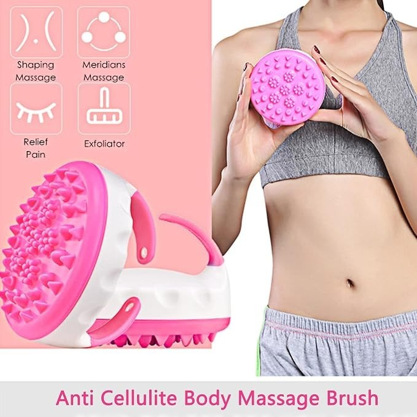
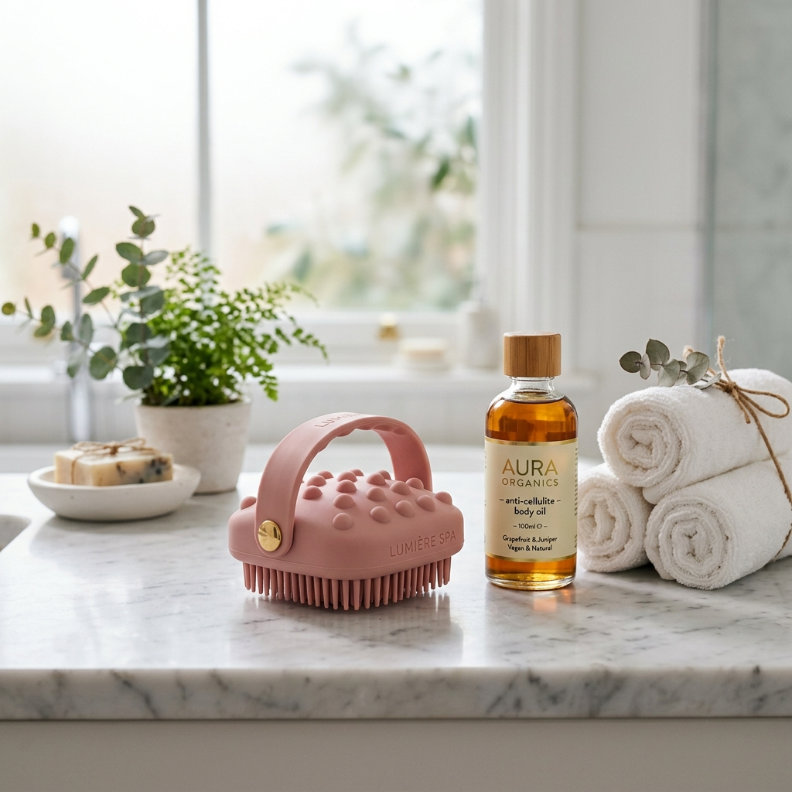
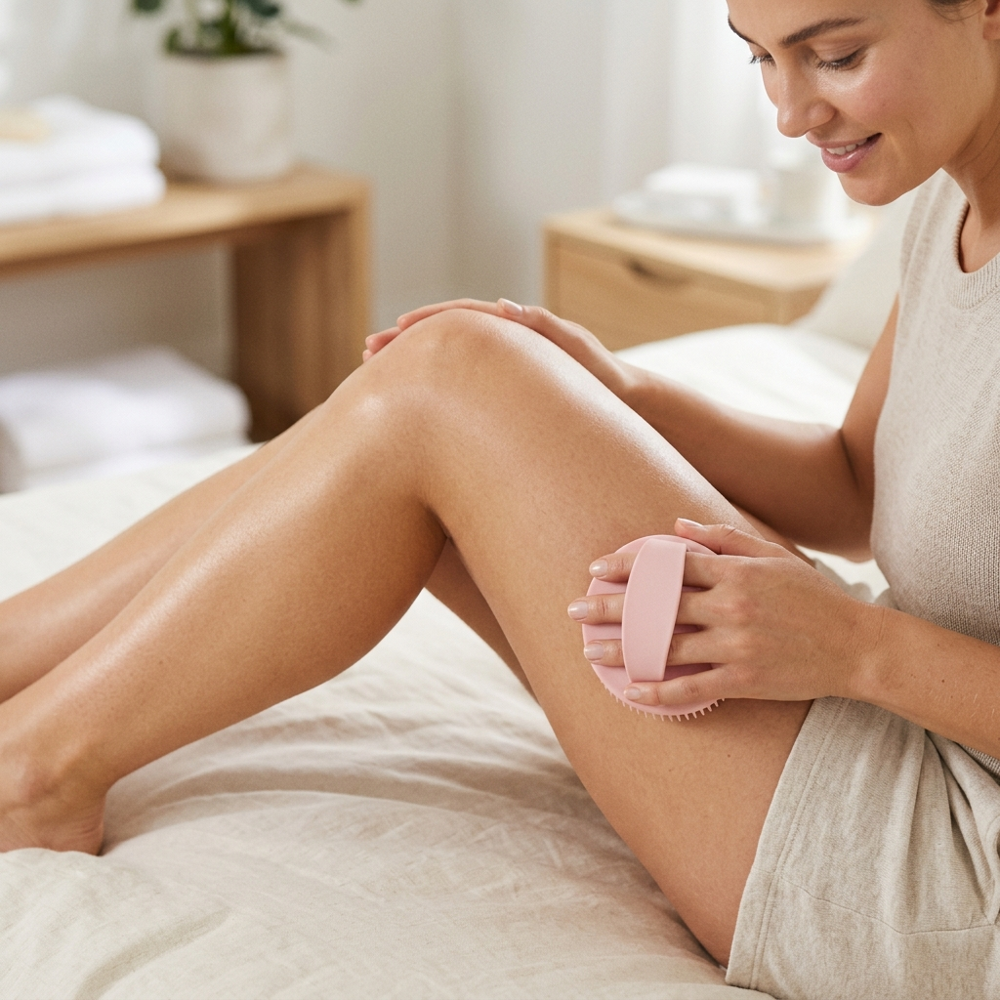

فرشاة السيليكون الطبية المبتكرة بنتوءات مقعرة ومحدبة ذكية (فعالة 3 أضعاف الفرش العادية): تعمل على تفتيت دهون البطن، الأرداف والذراعين، تنشيط التصريف اللمفاوي، وتمنحكِ تدليكاً مريحاً يزيل الإجهاد اليومي.



معظم الكريمات والتمارين الرياضية وحدها لا تصل إلى الجيوب الدهنية المحتبسة تحت الجلد. إليكِ الفارق الحقيقي:
صُممت هذه الفرشاة وفق أحدث معايير العناية بالبشرة والتدليك الرياضي والصحي لتقديم أفضل النتائج لجسم مشدود ومتألق.
تتميز بسطح ذكي يحتوي على نتوءات صلبة ومرنة في آن واحد لكسر الجلد المتكتل في البطن، الأرداف، الفخذين والذراعين للحصول على قوام متناسق.
تجمع بين الجوانب المقعرة والمحدبة المصنوعة من السيليكون الطبي عالي الجودة، مما يجعلها أكثر فاعلية بثلاث مرات من الفرش العادية دون أي ألم.
تعمل مع التمارين أو أثناء الاستحمام على تحفيز التصريف اللمفاوي الفوري، مما يقلل الانتفاخات ويساعد على طرد السموم المتراكمة واستعادة حيوية الجسم.
تحاكي تقنيات التدليك الآلي ونقاط الوخز بالإبر لتخفيف تشنجات العضلات والإجهاد اليومي، مما يحسن جودة النوم ويمنحكِ شعوراً بالراحة التامة.
تزيل الخلايا الميتة وتنشط تدفق الدم إلى سطح الجلد، مما يحفز إنتاج الكولاجين الطبيعي ويترك بشرتكِ ناعمة، ملساء، ولامعة كالحرير.
مزودة بحزام سيليكون يثبت بإحكام على كف اليد لمنع الانزلاق، ويمكن استخدامها جافة أو تحت الماء مع صابون الاستحمام أو زيوت وكريمات المساج.
فقط 5 إلى 10 دقائق يومياً كافية لإحداث فرق حقيقي في مظهر وملمس بشرتكِ!
ضعي القليل من زيت المساج المفضل لديكِ (مثل زيت اللوز أو الأركان أو زيت محاربة السيلوليت) أو استخدميها أثناء الاستحمام مع الجل المرطب.
مرري الفرشاة بضغط معتدل وبحركات دائرية وتصاعدية (باتجاه القلب) على الأرداف، الفخذين، البطن أو الذراعين لمدة 5-10 دقائق.
اشطفي الفرشاة بالماء الدافئ وجففيها بسهولة. ستشعرين فوراً بتدفق الدورة الدموية وخفة واسترخاء ملحوظ ونعومة فائقة في بشرتكِ.
استفيدي من الشحن المجاني إلى باب منزلكِ والدفع عند الاستلام بعد تفقد المنتج.
املئي معلوماتكِ أسفله وسيتصل بكِ فريق التوصيل لتأكيد عنوانكِ وإرسال الطرد فوراً
أكثر من 95% من العميلات لاحظن فرقاً حقيقياً في نعومة البشرة ونقص مظهر السيلوليت في الأسابيع الأولى.
"صراحة رائعة بزاف! كنت كنعاني من السيلوليت فالفخاذ ومن بعد الولادة. مع زيت الأركان والمساج يومياً لمدة 10 دقائق، الجلد ولا رطب ومشدود بزاف وتكتلات السيلوليت نقصو بشكل كبير. والسيليكون ديالها رطب مكيجرحش. شكراً ليكم على سرعة التوصيل."
"أحسن استثمار درتو هاد العام. المساج ديالها مريح بزاف بحال السبا! كنستعملها تحت الدوش مع الصابون، كتحس بالدورة الدموية كتجري وكتعطي راحة كبيرة للعضلات المتشنجة. خديت عرض جوج حبات وعطيت وحدة لماما وعجباتها حتى هي."
"المنتج وصلني كيفما فالصورة تماماً فـ 24 ساعة للباب ديال الدار. الجودة ديال السيليكون ممتازة وسهلة فالمسك باليد مكزلقش. كتصلح حتى لدهون البطن والذراعين. كنصح بيها أي بنت باغة تحافظ على رطوبة وشكل جسمها."
قامت مريم بناني من الدار البيضاء بشراء هذا المنتج للتو 🎉
منذ 3 دقائق